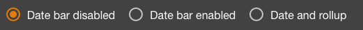

The Sidebar Menu you see on the left is completely customizable from the Edit Menu page (found under
Administration > Edit Menu).
You can hide or show menu items, edit menu item labels and icons, reorder menu items, create new menu
items and delete custom menu items.
The Edit Menu page is where you will edit existing menu items.
After modifying the menu structure you need to hit the Save button.
The Undo Changes button will reset the menu structure to its last saved state.
The Delete Custom Menu button will reset reset any modifications you have made to the default menu structure.
The table below will initially show you the Root (top-level) menu items.
Each row is a separate Menu Item or parent folder for other menu items.
The order they are in is the order they will be shown on the menu.
The Toggle icon will Hide/Show the menu item.
The Pencil icon will open the Edit Menu Item Dialog.
The Trash icon will Delete the menu item. It can only be used on User Created (Custom) menu items.
The 3 Dashes icon will Reorder the menu items. You can Click and Drag this icon to move it up or down.
The Down-Right Arrow icon will Expand a parent folder menu item.
If you Expand a parent folder menu item the table will update to show the menu items under that parent item.
The Menu path will update to show you which folder you are looking at. You can click a parent item name in the
Menu path (such as Root) to jump back up to the higher level view.
At any point you can click the Plus FAB Icon which is hovering over the bottom right of the table. This will open the
Create menu item dialog to create a menu item under the currently open parent folder.
The Create/Edit menu item dialog will open if you click the add new menu item FAB button on the Edit Menu page
or the Add/Edit Menu Item button on the Page Editor.
From this dialog you can set the menu item's properties. The Menu text input defines the label that will
display with the Menu Item and also in the Header Bar. If you are using custom translations you can enter
the translation key defined in i18n.properties. You can override the Menu text on default pages here as well.
The Menu icon name can be set using a Font Awesome
or Material Icon name. You will see a preview of the
icon on the left. You can set a user permission in the Permission required input.
If the user does not have this permission the menu item will not be shown. You can choose to hide the item from the
menu by clicking the Show menu item toggle on the right of the row.
You can choose a parent item to nest your menu item under. The State name is the unique ID for the menu
item. The URL path is what will display in the browser's address bar and will be
used in the URL to directly link to the page. It will be prefixed with the parent states' URL path.
The Choose a Custom Page drop-down will list all the user created custom pages that are saved in the
system. You can choose one to Link to custom page. Alternatively you can have the menu item be a
Folder, open an External Link, or open a Template URL relative to the ui
directory in the file system.
The radio buttons at the bottom allow you to choose whether or not make the Date Bar visible on the page. Also, you can choose whether or not to have rollup controls display on the Date Bar.

Users with the edit-ui-menus permission can edit any of the menu items or structure.
When editing the menu items you can set a permission under the Permission Required input of the Edit menu dialog.
If the user does not have this permission the menu item will not be shown.